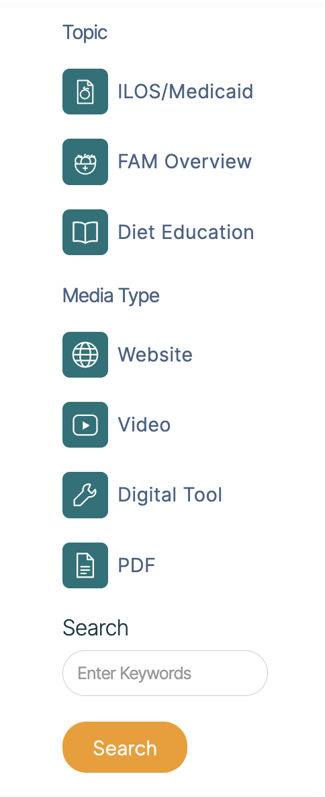

The Problem
No central, filterable resource library existed. What did exist skewed toward providers, leaving patients' own question, what does my plan cover, with nowhere to go.
My Role
I owned the hub end to end for HBOM's food-as-medicine (FAM) program, which lets Medicaid cover nutrition benefits: research, IA, filter logic, wireframes, and the Webflow build.
How might we
make FAM resources easy to find, easy to trust, and easy to act on, for providers, patients, and advocates alike?
01
Research & the Insight
A qualitative audit, not a formal usability study.
I reviewed Tufts Food is Medicine, the HHS/ODPHP FAM hub, StoryCorps, and the American Heart Association's Healthcare x Food site for tone and structure.
The gap: no FAM site segmented by user type, click behavior on resource cards was unclear, and none offered a path to request a missing resource, exactly the space this hub needed to fill.
02
Three Design Decisions
Each finding turned into one concrete decision.
User-type-first, with a three-panel filter — User Type, Topic, and Media Type, so patients never wade through content written for clinicians.

Clear click behavior — a media-type icon and tag on every card; I designed the custom ILOS/FAM icons with the client.
One combined request form — "I'm looking for" and "I want to suggest" used to be separate asks; now one toggle form.

03
Challenging Assumptions
Availability isn't access.
HBOM's brief was to gather every FAM resource in one place. But a pile of links a patient can't parse isn't access, it's just availability, so the hub had to guide people to the right resource, not just collect them.
The assumption I revised
I assumed users would cleanly self-identify and pick the right filter on the first try.
What changed
Roles overlap, someone can be both, or claim no label at all, so I designed the filters to be forgiving rather than gating: browsing without a user-type selected still works.
04
The Build
Figma to Webflow, brand-matched, and built for HBOM to maintain without a designer.
Every resource card maps to a small set of CMS fields, so HBOM can add new resources on their own. Trust matters for health content, so the detail page carries the provider's own logo or cover banner, an estimated-time indicator, and every link opens in a new tab.

05
Impact & Handoff
Built and handed off; public launch pending, so no usage numbers here.
Next: a CMS guide for HBOM's team and a plan for post-launch feedback.
Also edited a 30-second patient reel, which deepened my grasp of the field and the organization.